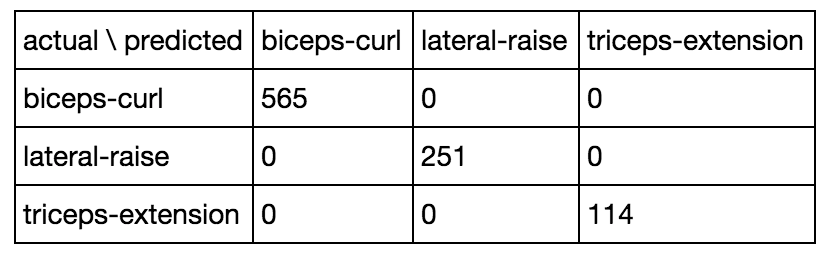
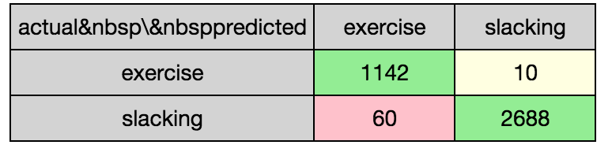

Muvr
Jan Macháček @honzam399
So, tell me again
how everything's fine in production!
It's all wrong
- Data loss from sensors, naïve padding
- Strict network quality requirements
- Large amounts of (unnecessary) data sent on network
- Insufficient feedback on machine learning results
- No timely feedback to the users
- One failing request resulted in offline session
- User experience simply not slick enough
What now?
- Better sensor and signal processing
- Shorter experiment cycle
- Distributed lambda architecture with feedback


More on the phone
- Responsive
- Resilient
- Core components in C++
- Multi-platform: buildable & testable independently
- Smallest possible device-only code
- Sane development tools (e.g. AppCode, CLion, emacs)

Human expert
std::pair<raw_sensor_data, size_t> decode_single_packet(const uint8_t *buffer);
class sensor_data_fuser {
public:
fusion_result push_back(const raw_sensor_data &decoded,
const sensor_location_t location,
const sensor_time_t wall_time);
};
@interface MRMultilayerPerceptron : NSObject
- (instancetype)initWithModel:(MRModelParameters *)model;
- (MRClassifiedResistanceExercise *)classify:(const std::vector<fused_sensor_data> &)data;
@property uint windowStepSize;
@end
#import <Foundation/Foundation.h>
@interface MRPreclassification : NSObject
- (void)pushBack:(NSData *)data from:(uint8_t)location;
@property id<MRExerciseBlockDelegate>
exerciseBlockDelegate;
@property id<MRDeviceDataDelegate>
deviceDataDelegate;
@property id<MRClassificationPipelineDelegate>
classificationPipelineDelegate;
@end
class MRExerciseSessionViewController : UIPageViewController,
MRDeviceSessionDelegate,
MRDeviceDataDelegate,
MRExerciseBlockDelegate,
MRClassificationPipelineDelegate,
MRExercisePlanDelegate {
func deviceSession(session: DeviceSession, sensorDataReceivedFrom deviceId: DeviceId,
atDeviceTime time: CFAbsoluteTime, data: NSData) {
preclassification!.pushBack(data, from: 0)
}
func classificationCompleted(result: [AnyObject]!, fromData data: NSData!) {
userClassification = MRExerciseSessionUserClassification(...)
classificationCompletedViewController?.
presentClassificationResult(..., onComplete: logExerciseExample)
}
private func logExerciseExample(example: MRResistanceExerciseExample) {
self.state!.postResistanceExample(example)
}
}
I didn't mean to scare you...

Deltoid cable cross-overs
Rope triceps extensions
Barbell biceps curls
Dumbbell rows

Alternating dumbbell biceps curls

Back session
Akka


object ProfileService extends Directives
with CommonMarshallers with CommonPathDirectives {
def userProfileRoute(userProfile: ActorRef,
userProfileProcessor: ActorRef)
(implicit _: ExecutionContext) =
path("user") ~
path("user" / UserIdValue) ~
path("user" / UserIdValue / "check") ~
path("user" / UserIdValue / "image") ~
path("user" / UserIdValue / "device" / "ios") ~
path("user" / UserIdValue / "device" / "android")
}
class UserProfileProcessor(userProfile: ActorRef)
extends PersistentActor with ActorLogging {
override def receiveRecover: Receive = ...
override def receiveCommand: Receive = ...
}
var accounts: KnownAccounts = KnownAccounts.empty
override def receiveCommand: Receive = {
case UserRegister(email, _)
if accounts.contains(email) ⇒
sender() ! \/.left("Username already taken")
}
var accounts: KnownAccounts = KnownAccounts.empty
override def receiveCommand: Receive = {
...
case UserRegister(email, password) ⇒
persist(UserRegistered(UserId.randomId(), ...)) {
userRegistered ⇒
userProfile ! userRegistered
accounts = accounts.withNewAccount(...)
saveSnapshot(accounts)
sender() ! \/.right(userRegistered.userId)
}
}


val mediator = DistributedPubSubExtension(...)
val topic = "UserProfileProcessor.knownAccounts"
mediator ! Subscribe(topic, self)
override def receiveCommand: Receive = {
case UserRegister(email, password) ⇒
persist(UserRegistered(UserId.randomId(), ...)) {
...
mediator ! Publish(topic, KnownAccountAdded(...))
}
case KnownAccountAdded(email, userId)
if sender() != self ⇒
accounts = accounts.withNewAccount(email, userId)
}
class UserProfile extends PersistentActor {
private var profile: Profile = _
override val persistenceId: String =
s"user-profile-${self.path.name}"
override def receiveCommand: Receive = notRegistered
private def notRegistered: Receive = ...
private def registered: Receive = ...
}
private var profile: Profile = _
private def notRegistered: Receive = {
case cmd: Account ⇒
persist(cmd) { acc ⇒
profile = Profile(acc, Devices.empty, None, None)
saveSnapshot(profile)
context.become(registered)
}
}
private def registered: Receive = {
case GetAccount ⇒ sender() ! profile.account
...
}
class UserExerciseProcessor
extends PersistentActor with ActorLogging {
private val userId = UserId(self.path.name)
override val persistenceId: String =
s"user-exercises-${userId.toString}"
override def receiveRecover: Receive = ...
override def receiveCommand: Receive = ...
}
override def receiveCommand: Receive = {
case eres@EntireResistanceExerciseSession(
id, session, examples) ⇒
persist(eres) { _ ⇒
sender() ! \/.right(id)
}
case Suggestions(suggestions) ⇒
...
...
}
Apache Spark
Serialization
- Fast
- Stable
- Compatible
Kryo & Chill
akka.actor.serialization-bindings {
"io.muvr.exercise.ResistanceExercise" = kryo,
"io.muvr.exercise.ResistanceExercise" = kryo,
"io.muvr.exercise.ResistanceExerciseExample" = kryo,
"io.muvr.exercise.EntireResistanceExerciseSession" = kryo,
"io.muvr.exercise.ResistanceExerciseSession" = kryo,
"io.muvr.exercise.Rest" = kryo,
"io.muvr.exercise.SessionId" = kryo
}
akka.actor.serializers {
kryo = "com.twitter.chill.akka.AkkaSerializer"
}
import org.apache.spark.{SparkConf, SparkContext}
object SimpleMain {
private def sparkConf(): SparkConf = {
new SparkConf()
.setAppName("Muvr Analytics")
.set("spark.cassandra.connection.host", "...")
}
def main(args: Array[String]) {
import cassandra._
import akka.analytics.cassandra
val sc = new SparkContext(sparkConf())
sc.eventTable().cache().foreach(println)
}
}
#!/bin/sh
spark-submit \
--class "io.muvr.analytics.basic.SimpleMain" \
--master local[4] \
--driver-class-path basic/target/basic-assembly-1.0.0-SNAPSHOT.jar \
basic/target/basic-assembly-1.0.0-SNAPSHOT.jar
def main(args: Array[String]) {
import cassandra._
val sc = new SparkContext(sparkConf)
val et = sc.eventTable().cache()
val eu = et.flatMap {
case (JournalKey(UserExerciseProcessorPersistenceId(userId), _, _),
EntireResistanceExerciseSession(id, _, examples)) ⇒
examples.map(e ⇒ userId → e)
}.flatMap { case (userId, ex) ⇒
example.correct.map(corr ⇒ (userId, corr.resistanceExercise, ex.fusedSensorData))
}.groupBy { case (userId, exercise, data) ⇒
userId
}
eu.foreach { case (userId, exercises) ⇒
exercises.foreach { case (_, exercise, data) ⇒
csvWriter.writeExample(exercise.id, data)
}
}
}


You know what?
Demo
Q&A
Thank you!
- ☞ Jobs at www.cakesolutions.net/careers ☜
- Slides at www.eigengo.com/katsconf-2015
- All code at github.com/muvr
- Tweets at @honzam399
References
- LTLf and LDLf Monitoring. Giuseppe De Giacomo, Riccardo De Masellis, Marco Grasso, Fabrizio Maria Maggi and Marco Montali, 2014
- User Exercise Pattern Prediction through Mobile Sensing. Georgi Kotsev, Le T. Nguyen, Ming Zeng, and Joy Zhang, 2014
- Convolutional Neural Networks for Human Activity Recognition using Mobile Sensors. Ming Zeng, Le T. Nguyen, Bo Yu, Ole J. Mengshoel, Jiang Zhu, Pang Wu and Joy Zhang, 2014
- Fast Prediction with SVM Models Containing RBF Kernels. Marc Claesen, Frank De Smet, Johan A.K. Suykens and Bart De Moor, 2014
- Adaptive Activity Recognition with Dynamic Heterogeneous Sensor Fusion. Ming Zeng, Xiao Wang, Le T. Nguyen, Pang Wu, Ole J. Mengshoel and Joy Zhang, 2014
- Parametric Linear Dynamic Logic. Peter Faymonville and Martin Zimmermann, 2014
- Time-Series Classification Through Histograms of Symbolic Polynomials. Josif Grabocka, Martin Wistuba and Lars Schmidt-Thieme, 2013
- Accelerometer-based Energy Expenditure Estimation Methods and Performance Comparison. Fang-Chen Chuang, Ya-Ting C. Yang and Jeen-Shing Wang, 2013
- Linear Temporal Logic and Linear Dynamic Logic on Finite Traces. Giuseppe De Giacomo and Moshe Y. Vardi, 2013
- Visualizing Variable-Length Time Series Motifs. Yuan Li, Jessica Lin and Tim Oates, 2012
- Segmenting Time Series: A Survey and Novel Approach. Eamonn Keogh, Selina Chu, David Hart and Michael Pazzani, 2011
- Finding Motifs in Time Series. Jessica Lin, Eamonn Keogh, Stefano Lonardi and Pranav Patel, 2002